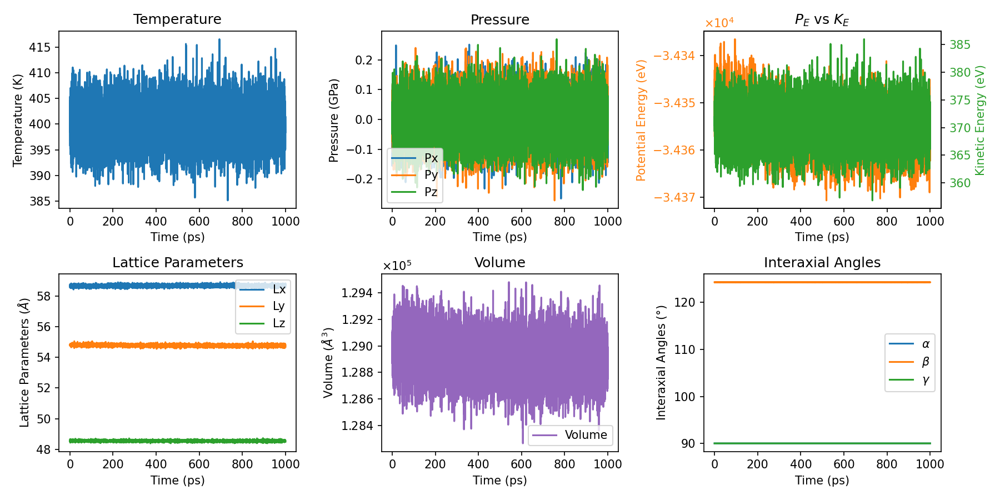
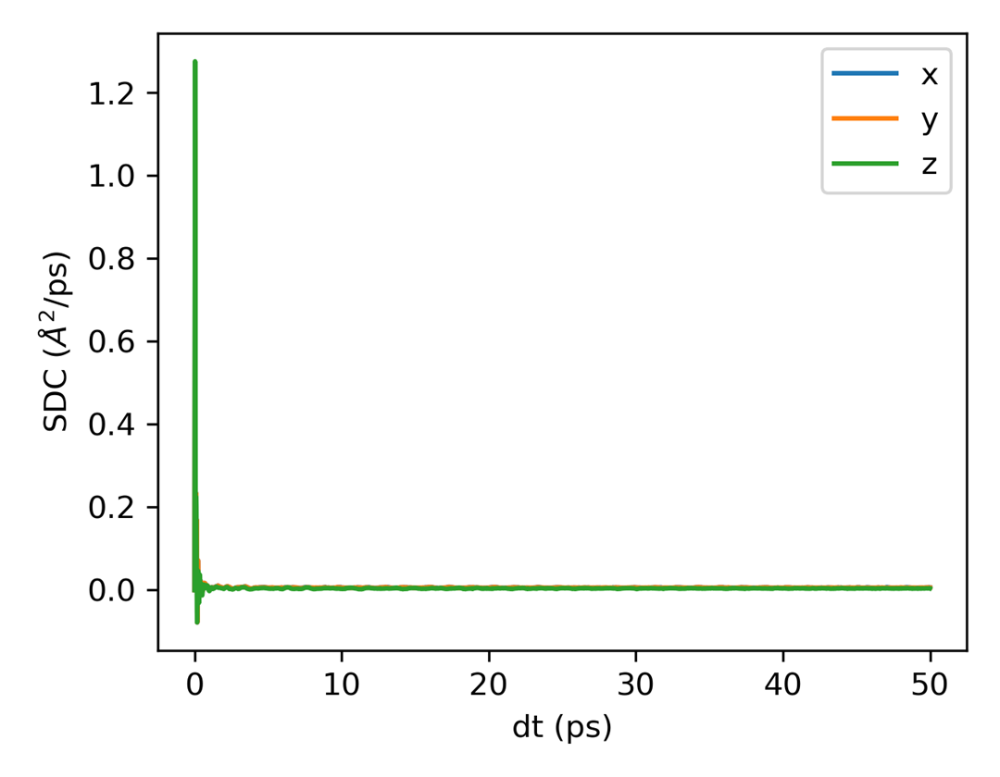
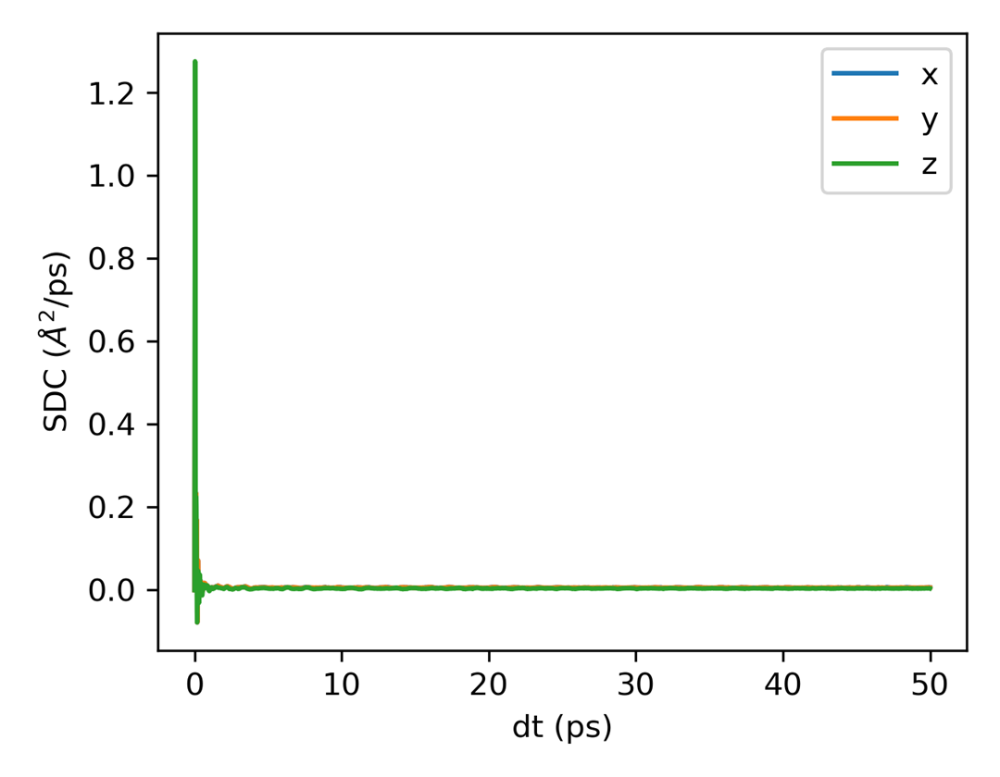
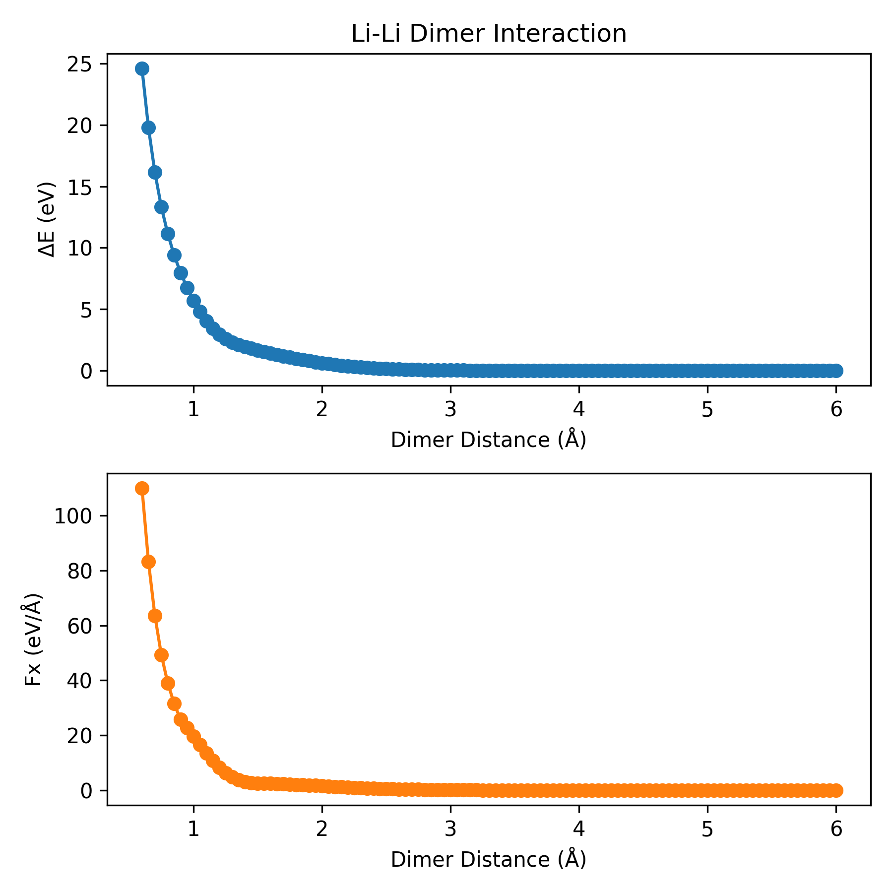
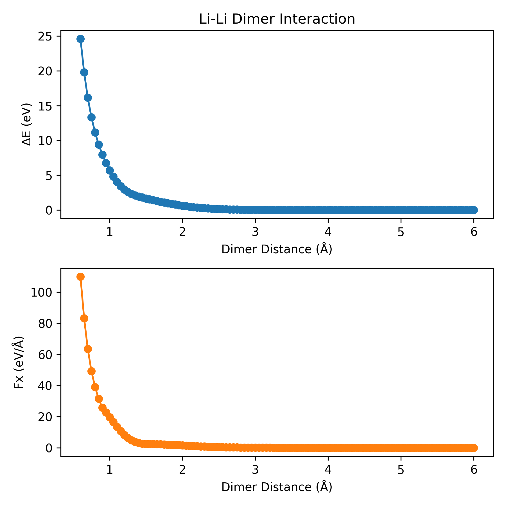

Plot Scripts
Plot Scripts
This folder contains Python scripts for visualization of data generated by GPUMD and NEP.
plt_nep_thermo.py: Python script to visualize temperature, pressure, kinetic energy, potential energy, lattice parameters, volume, and interaxial angles evolution over simulation time based on data fromthermo.out.

plt_nep_train_results.py: Python script to visualize parameters duringNEPtraining and comparison ofDFTandNEPpredictions forenergy,force,stress, etc.
plt_nep_train_test.py: Python script to visualize the parity plot of*_train.outand*_test.out.

plt_nep_prediction_results.py: Python script to visualize predictions during theNEPprediction process.

plt_force_errors.py: Plot the force error evaluation metrics fromforce_train.out.

plt_descriptors.py: Plot the high-dimensional descriptors in different training sets. See arXiv:2504.15925 for more details. You can generate thedescriptors.npyby the scriptscalc_descriptors.pyin thecalculators, or usegpumdkit.sh -calc des <method> <input.xyz> <output.npy> <element>.
plt_msd.pyandplt_sdc.py: Python scripts to visualize the mean-square displacement (MSD) and self diffusion coefficient (SDC) frommsd.out.
 

plt_msd_all.py: Python scripts to visualize the MSD of all species frommsd.out. You need to useall_groupswhen you compute msd using thecompute_msdcommand.
plt_msd_convergence_check.py: Python scripts to check the convergence of msd. You need to usesave_everywhen you compute msd using thecompute_msdcommand.
-
plt_rdf.py: Python script to visualize the RDF fromrdf.outfile. -
python plt_rdf.py [save]will plot all columns in therdf.out.
-
python plt_rdf.py [column] [save]will plot the specified column in therdf.out.
-
plt_nep_restart.py: Python script to visualize the parameters innep.restartfile.

plt_dimer.py: Python script to plot the dimer interaction. See arXiv:2504.15925 for more details.
 

plt_charge.py: Python script to plot the charge distribution.
thermo.png, train.png, train_test.png, prediction.png, msd.png, msd_all.png, msd_convergence.png, nep_restart.png, rdf.png, dimer.png, charge.png: Example output plots generated by the scripts.
Usage:
You can use gpumdkit.sh for simplified execution:
gpumdkit.sh -plt thermo/train/prediction/train_test/msd/msd_all/msd_conv/sdc/rdf/vac/restart/dimer/des [save]
Replace thermo, train, prediction, train_test, msd, rdf,vac, restart, dimer, des with the desired script keyword.
The optional save argument will save the plot as a PNG file; omitting it will display the plot using plt.show().
Example:
To visualize thermo evolution from thermo.out :
To save the plot of thermo evolution from thermo.out :
Thank you for using GPUMDkit! If you have any questions or need further assistance, feel free to open an issue on our GitHub repository or contact Zihan YAN (yanzihan@westlake.edu.cn).